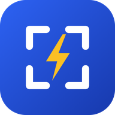

Ultimo aggiornamento: 14 novembre 2026 · English version below
SopraLux è un'app per il rilievo degli impianti elettrici. Tutto quello che crei resta sul tuo dispositivo: sopralluoghi, planimetrie, foto, note audio, scritte a mano e impostazioni. Non serve un account, non ci sono pubblicità né statistiche di utilizzo, e lo sviluppatore non riceve né conserva i tuoi dati.
Davide Iervolino (Diervsoft), sviluppatore dell'app. Contatto: dierv@hotmail.it.
Le foto e le note audio possono contenere dati personali di terzi (per esempio persone, targhe o nomi su citofoni e quadri): sei tu, come professionista, a deciderne l'uso nel rispetto delle norme sulla privacy.
Ogni permesso si usa solo quando attivi la funzione e puoi revocarlo dalle impostazioni del dispositivo.
Il riconoscimento con l'intelligenza artificiale è spento finché non inserisci nelle Impostazioni una tua chiave API di uno di questi servizi: Claude (Anthropic), ChatGPT (OpenAI), Gemini (Google) o Grok (xAI). Solo in quel caso, e solo per le foto che fai analizzare, l'app invia la foto e il testo della richiesta direttamente dal dispositivo al servizio che hai scelto, con una connessione cifrata. Lo sviluppatore non vede né conserva questi dati. Il trattamento da parte del servizio scelto segue il contratto e l'informativa che hai con quel fornitore.
L'app non vende dati, non mostra pubblicità, non usa strumenti di tracciamento né di analisi e non condivide dati con terzi, salvo quanto descritto per l'intelligenza artificiale scelta da te.
I dati restano finché li tieni sul dispositivo. Puoi eliminare un sopralluogo dall'app, cancellare la cartella Documenti/SopraLux o disinstallare l'app: lo sviluppatore non ha copie da cancellare.
L'app è uno strumento professionale e non è rivolta ai minori.
Poiché lo sviluppatore non raccoglie i tuoi dati, l'accesso, la rettifica e la cancellazione li fai direttamente sul dispositivo. Per qualsiasi domanda scrivi a dierv@hotmail.it. Puoi anche presentare reclamo al Garante per la protezione dei dati personali (garanteprivacy.it).
Se in futuro l'app offrirà servizi in abbonamento (per esempio la sincronizzazione su server tra più dispositivi), questa informativa sarà aggiornata prima dell'attivazione e la data in alto cambierà.
Last updated: 14 November 2026
Summary. SopraLux is an app for surveying electrical installations. Everything you create (surveys, floor plans, photos, voice notes, handwriting, settings) stays on your device. No account is required, there are no ads or analytics, and the developer does not receive or store your data.
Controller. Davide Iervolino (Diervsoft), the app developer. Contact: dierv@hotmail.it.
Data and storage. Surveys, plans, photos, voice notes and drawings are stored only on the device and copied to the device's Documents/SopraLux folder. Backups and exports are created by you and saved or shared wherever you choose. Settings and AI API keys stay on the device.
Permissions. Camera (photos), microphone (voice notes), photos and files (plans, archive, exports), motion sensors (compass). Each is used only when you use the related feature and can be revoked in the device settings.
Optional AI. AI recognition is off unless you enter your own API key for Claude (Anthropic), ChatGPT (OpenAI), Gemini (Google) or Grok (xAI). Only then, and only for the photos you choose to analyse, the app sends the photo and request text directly from your device to the provider you selected over an encrypted connection. The developer never sees or stores this data; the provider processes it under your own agreement with that provider.
Sharing. No data is sold, no ads, no tracking or analytics, no sharing with third parties other than the AI provider you choose.
Retention and deletion. Data remains as long as you keep it on the device. Delete a survey in the app, delete the Documents/SopraLux folder or uninstall the app; the developer holds no copies.
Children. The app is a professional tool and is not directed at children.
Changes. If subscription services (for example server synchronisation between devices) are added, this policy will be updated before they are activated.